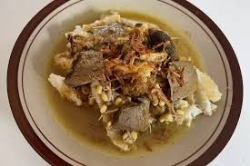

SOTO Krandegan
Bahan-bahan
- 1 kg daging sapi
- 1 butir kelapa, buat 1/2 l santan kental, yg encer utk rebus dgg
- 200 gr tauge rebus
- 100 gr seledri
- Bawang goreng utk taburan
- 6 buah bawang merah
- 5 siung bawang putih
- 1/2 sdtmerica bubuk
- 1/2 sdt garam
- 1/2 sdt gula pasir
- 1/4 sdt penyedap rasa
- 2 ruas jari lengkuas
- 2 ruas jari jahe
- 2 ruas jari kunyit
- 2 lembar daun salam
- 2 butir kemiri
- 3 liter santan
- Bumbu tambahan kuah soto :
- 3 batang daun bawang, digoreng
- 1/2 sdt jinten
- 50 gr kacangtanah
- 10 buah cengkeh
- 2 butir kemiri
- 1 buahkayu manis
- sambal soto:
- 100 ml kecap manis
- cabai
- bawang goreng
Cara membuat:
- Cuci bersih daging sapi lalu Haluskan bumbu2 utk daging , kemudian tumis dg minyak goreng
- Rebus daging bersama tumisan bumbu, jahe, lengkuas, serai dan daun salam sampai empuk, tambahkan sedikit garam dan penyedap lalu Sembari menunggu daging empuk, siapkan bumbu kuah soto. Sangrai bumbu, kemudian haluskan
- Lihat tingkat keempukan daging, setelah empuk, ambil daging, sisihkan Lanjutkan masak kuah soto dengan menggunakan kuah daging td. Masukkan bumbu dan santan kental, didihkan. Tambahkan daun bawang goreng kedalam kuah soto
- Cara menghidangkan: iris ketupat di mangkok, tambahkan irisan daging, taburi taoge, seledri dan bawang goreng, beri sambal kecap dan kuah soto